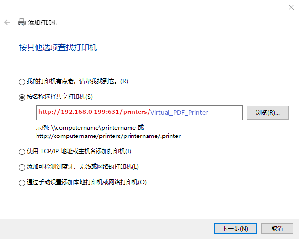

1.0 CUPS 打印机设置
1.1 安装软件 cups
emerge -avq cups
1.2 允许远程配置
FILE: /etc/cups/cupsd.conf
<Location />
Order allow,deny
Allow localhost
Allow from 192.168.0.*
</Location>
<Location /admin>
Order allow,deny
Allow localhost
Allow from 192.168.0.*
</Location>
<Location /admin/conf>
Allow localhost
Allow from 192.168.0.*
AuthType Default
Require user @SYSTEM
Order allow,deny
</Location>
<Location /admin/log>
AuthType Default
Require user @SYSTEM
Order allow,deny
</Location>
1.3 远程通过浏览器
添加打印机：http://192.168.0.3:631
找到Admin，使用root登录，然后用find printer。
1.4 设置命令行
lpstat -p -d #列出打印机名称(hp-printer)
lpoptions -d hp-printer # 设置缺省的打印机为hp-printer
lpstat -p -d #列出打印机名称(hp-printer)
2.0 CUPS-PDF 安装与设置
2.1 安装软件打开 ppds use
emerge -avq cups-pdf
这样会安装一个打印机驱动/usr/share/cups/model/CUPS-PDF_opt.ppd
2.2 通过631端口添加打印机时选择上面的 ppd
- Default name: Virtual PDF Printer
- Printer Type: Generic CUPS-PDF Printer (w/ options) (color)
- Change output directory: /etc/cups/cups-pdf.conf
FILE: /etc/cups/cups-pdf.conf
Out /data/share/public/pdf_printed
2.3 Windows10客户端
-
添加打印机：

-
选择打印机型号：HP Color LaserJet 4550 PS Class Driver （选择其他的打的是空白页面)
3.0 lpr lp 命令行打印机设置
- 检查/etc/printcap
通过cups的设置，在/etc/printcap 被自动生成：
FILE: /etc/printcap
# This file was automatically generated by cupsd(8) from the
# /etc/cups/printers.conf file. All changes to this file
# will be lost.
HP_M1536dnf|HP_M1536dnf:rm=mini:rp=HP_M1536dnf:
Virtual_PDF_Printer|Virtual PDF Printer:rm=mini:rp=Virtual_PDF_Printer:
-
安装用于打印UTF-8的软件包 app-text/paps
-
打印命令举例
paps 修心.md |lp -d Virtual_PDF_Printer
paps --columns=2 thinking.md |lp -d Virtual_PDF_Printer
paps --font=KaiTi thinking.md |lp -d Virtual_PDF_Printer
paps --font="KaiTi 12" thinking.md |lp -d Virtual_PDF_Printer
paps --font="WenQuanYi Zen Hei Sharp 2" thinking.md |lp -d Virtual_PDF_Printer
- 字体通过 fc-list 命令可以查到，支持ttf字体。